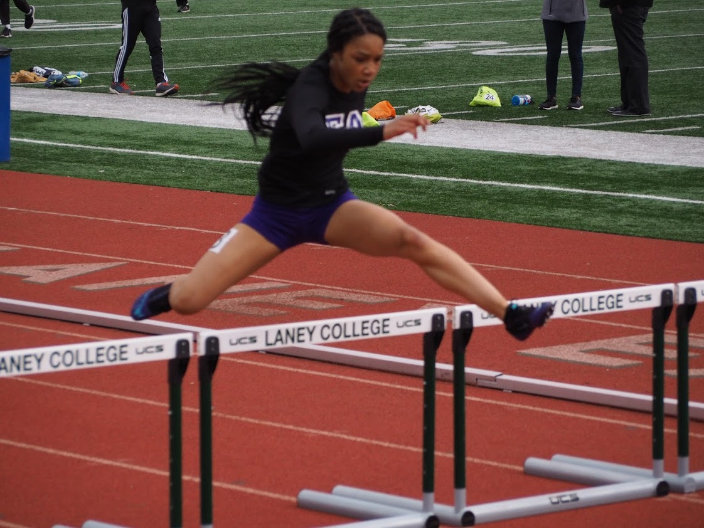

So I am 15 years old and I go to Envision Aacademy in Downtown Oakland. I am going to the 10th grade. Im single, yes its true, and Im ready to mingle but I need someone to get on my level. PERIOD POOH. Right now I am doing smash and I am enjoying it. I think that SMASH is a really good oppurtunity to get ahead in life. Its exciting but still tiring. I was born on March 11, 2004 in Los Angeles, California

I am a student athlete and I run for my school and a club track. Right now I have a 3.96 and I am ranked second and first place for all of Oakland. I run 400 hurdles, 300 hurdles, 100 hurdles, 100 meters,200 meters, and the 4 by 100 relay. Some of my other hobbies are reading urban stories, and listening to music very loudly. My favorite mucial artist is Roddy Ricch. I hope you enjoy learning about me and surfing my page! Bye HON! 👌 😋 Yall could follow my new account www.instgram.com/itz.niquuee/